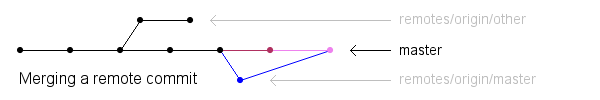

This tutorial explains how to share a Git repository among developers. It is meant for small teams who are adopting Git for the first time, and want to get started quickly with a familiar setup before exploring Git's many new possibilities.
If you follow this route, you will end up with a single centrally-hosted repository that everyone in your group can use to publish their own work and fetch whatever others have published. People used to a centralised VCS will find this model easy to adjust to, but of course, each user's "working copy" will itself be a fully-fledged Git repository, and many new workflows are available to users as they learn more.
It would help if you're familiar with basic Git terminology and usage, but if not, you can skim through to find out which commands you need to read about and experiment with. (I recommend Git from the bottom up and the Git tutorial for an introduction.) I shall assume that everyone has git 1.6.5 or later installed, and that they have ssh access to the server that will host the repository.
In the ideal case, you create a repository on the server, clone it on each workstation, and are ready to start work. That happy situation is described below, as well as the all-too-likely addition of an existing repository into the picture.
Use git init to create a new repository. The easy way to
give people read-write access to it is to add all the relevant users to
one group (say dev), and give that group ownership of the
repository:
$ git init --bare --shared foo.git Initialized empty shared Git repository in /git/foo.git/ $ chgrp -R dev foo.git
It doesn't matter what user you run this command as. The
--shared option sets the permissions on everything in the
repository to group-writable.
Let's say the server is named example.org, and the new
repository lives in the /git/foo.git directory. To anyone
with ssh access to the server, the repository is now available at
ssh://example.org/git/foo.git.
This can be done in many ways. My advice is to set up the new repository on the server, push everything from the old repository into it, and forget about the old repository.
$ cd existing.git $ git push ssh://example.org/git/foo.git '*:*' Counting objects: 3, done. Writing objects: 100% (3/3), 204 bytes, done. Total 3 (delta 0), reused 0 (delta 0) Unpacking objects: 100% (3/3), done. To ssh://example.org/git/foo.git * [new branch] master -> master
The output above is from a test repository with a single commit. The
*:* notation pushes everything, including tags and remote
branches. If that's not what you want, use a more specific notation and
multiple pushes; or just get rid of any branches, remotes, or tags you
don't want before you push everything. There are many complications
possible at this step, but discussing them is not within the scope of
this article.
(Why forget about the old repository? It's just simpler that way, but if you really want, you can configure it to pretend that it's just another clone of the new repository.)
Each user can now create their own copy of the central repository:
$ git clone ssh://example.org/git/foo.git Initialized empty Git repository in /home/ams/foo/.git/
This clone is now configured to track the central repository,
which means that git pull will pull any commits from it
that you don't have already, and git push will push any
new commits back to it. The next sections explain how this works.
(Note: You'll see a warning about having cloned an empty repository if
you didn't push anything into foo.git. There's no problem
with starting from scratch, but you need to remember that the very first
push back to the central repository is special. More about that later.)
Let's pretend the original repository looks like the following diagram.
The dots are commits, and there are two branches named
master and other:
The newly-cloned repositories can refer to the central repository as
"origin", which is just a handy alias for the full ssh://
URL. During the initial cloning operation, any branches that exist in
the origin repository are saved as "remote branches" in the clone. A
branch named x in origin would be named
remotes/origin/x on the clone. Remote branches are meant to
represent the state of a remote repository, so you shouldn't commit to
them directly.
Instead, you should create a local branch that follows or tracks any
remote branch you're interested in; and this is done automatically for
the default branch, conventionally named master. After the
clone, you will have a remote branch named
remotes/origin/master, and a local branch named
master, which is checked out already. The former represents
the latest commit in origin. The latter follows along, but will include
your own local commits too.
When you git commit, your master branch is
updated to point to the new commit. When you git push, your
master is used to update origin's master.
When you git pull, origin's master is used
to update your remotes/origin/master branch, which in turn
is used to update your own master branch.
When multiple people push commits to a shared origin, the update process
involves an extra step. Suppose you push a commit while a colleague
creates a new local commit of her own. When she tries to git
push, the server rejects the push so as to not lose your commit
(which she doesn't have). She must then run git pull, which
will first update her origin/master remote branch to
include your commit, then merge it into her master so that
it includes both her commit and yours.

Her next git push will push the merged branch to origin. If
you run git pull next, your origin/master will
be updated to match origin's new master, then merged
into your master so that you have your colleague's commit
too, besides any new ones of your own. If you run git pull
without making any local changes, Git will update the remote-tracking
branch, and fast-forward your local branch to the new commit
without creating a new merge commit to record the event.
If the various commits do not conflict, Git will merge them with no
intervention. Otherwise, it will merge any non-conflicting changes
automatically and ask you to resolve the remaining conflicts by hand.
Run git status to see which files have been merged, and
which ones need your attention. Look for ====== conflict
markers in each unmerged file, edit the surrounding text to fix the
problem, and run git add filename to mark that file
as resolved. When you're done, run git commit to complete
the merge. See
git-merge(1)
for more details.
You can create new local branches with git branch
branchname and switch between branches with git
checkout branchname. To push a new branch to the server,
run git push origin branchname. This will create a
branch named branchname in origin, and
remotes/origin/branchname in your repository. Anyone who
then runs git pull will get their own pair of
remote-tracking and local branches of that name.
If you do not explicitly push your new local branches, they stay in your
repository and are invisible to others. git push by default
pushes only those branches that already exist on the server. This is why
you have to explicitly git push origin master the first
time you push to an empty central repository. In contrast, git
pull will create local copies of any new branches on the server.
You can also use git remote to add nicknames for other
repositories than origin. You'll get a new set of remote-tracking
branches for the new remote repository, and you will have to specify the
name as an argument to git push and git pull,
but the transfer of commits will otherwise work in exactly the same way.
Pulling and pushing can be much more flexible than described
here—you can specify what branches to track and update
automatically, have different local names for branches, and so on. See
git-push(1)
and
git-pull(1)
for more.
Git offers many other workflow and configuration possibilities. Here are a few directions to explore.
Use hooks to automate tasks like sending email to the developers for every commit or enforcing coding standards.
There are graphical frontends like git-cola and QGit, and repository browsers like gitk and Gitweb (both distributed with Git). Use them to browse history and assign blame. Use git-bisect to find out which commit broke a particular test case.
You may eventually need to provide read-only repository access to people outside your own team/network—set up git-daemon. To give someone write access, just give them an ssh account on the server; or install gitolite (the better-documented and better-maintained alternative to gitosis) for fine-grained access control and easier user management.
With more users, the "everything in the master branch" model described here may prove inadequate. There are many workflows that take advantage of Git's easy branching and merging, such as this nicely-illustrated one and the suggestions in gitworkflows(7). Even if you adopt a more decentralised approach, you can keep using your formerly-central repository as a fixed point of contact and for backups.
Questions are welcome, no matter how basic they are. By asking them, you may help to improve this tutorial, and thus help future readers.
Thanks to everyone who commented on this document.
2010-04-20